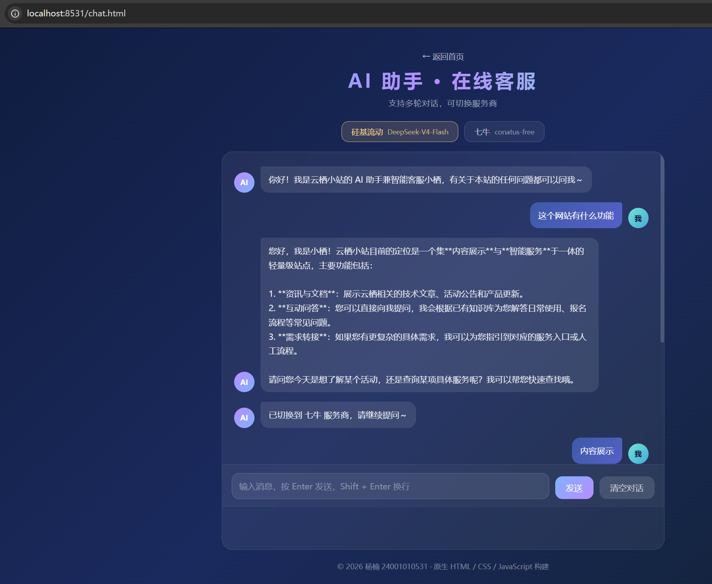
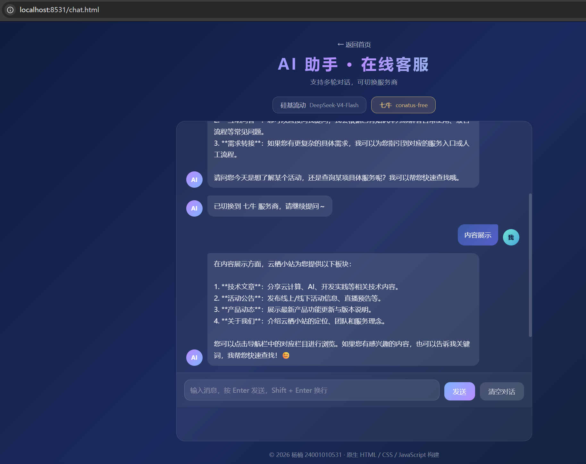
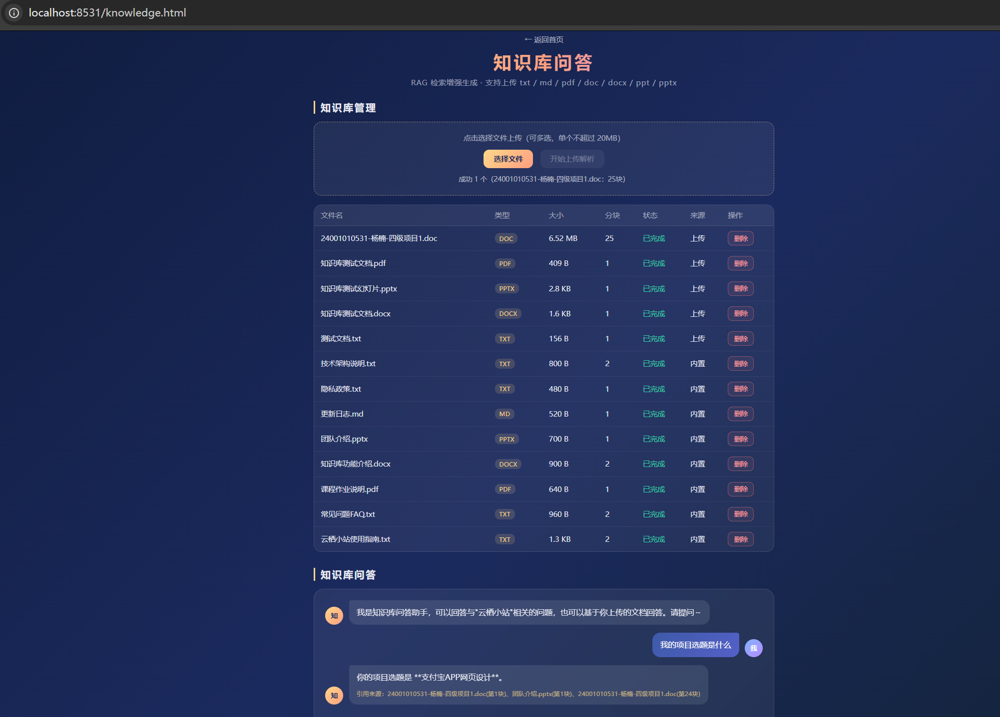
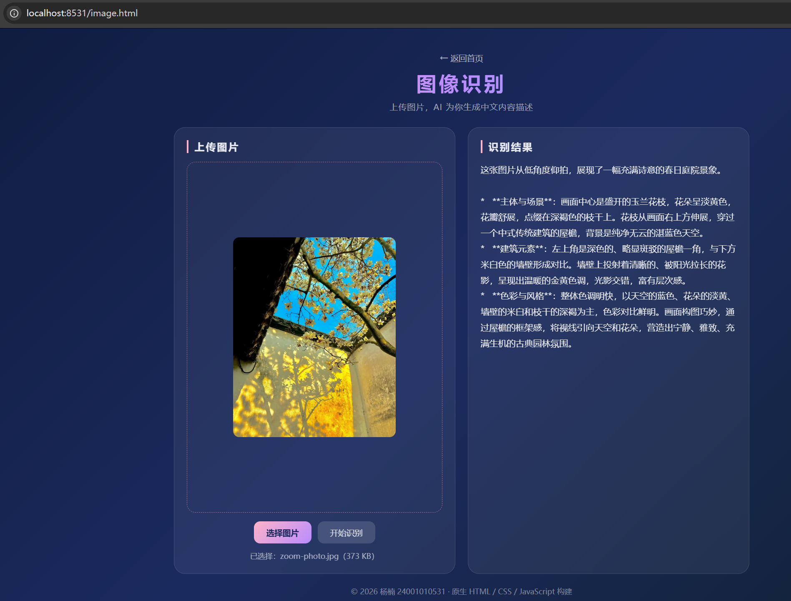
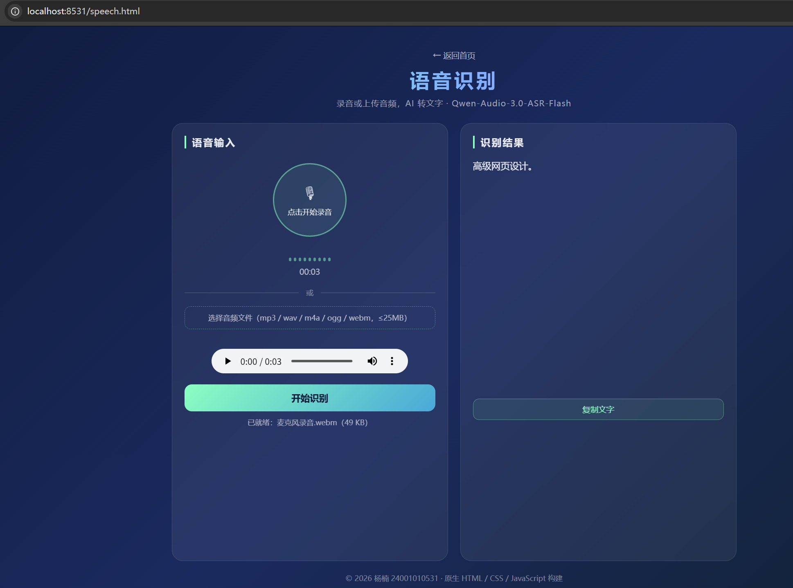

← 返回首页
AI DEMO
AI 应用测试结果
课堂作业运行截图 · 五项能力全部实现
说明：
以下五张截图来自本地运行的 AI 应用（端口 8531），涵盖
在线客服（双服务商切换）
、
知识库问答
、
图像识别
、
语音识别
四类能力。在线客服同时接入硅基流动 DeepSeek-V4-Flash 与七牛 conatus-free，可一键切换继续对话。
AI 助手 · 在线客服
1
AI 助手 · 在线客服（硅基流动）
接入硅基流动 DeepSeek-V4-Flash，首轮对话回答网站功能介绍

2
AI 助手 · 切换七牛继续对话
一键切换到七牛 conatus-free 服务商，上下文保持连续，继续回答后续提问

知识库问答
3
知识库问答（RAG 检索增强生成）
支持上传 txt / md / pdf / docx / pptx，问答时引用文档片段作为答案来源

图像识别
4
图像识别 · 中文内容描述
上传图片后 AI 自动识别主体、构图、色彩风格，生成结构化中文描述

语音识别
5
语音识别 · 录音转文字
支持麦克风实时录音或上传音频文件（mp3 / wav / m4a / ogg / webm ≤25MB），模型为 Qwen-Audio-3.0-ASR-Flash
